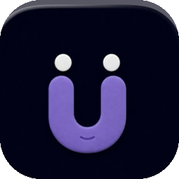
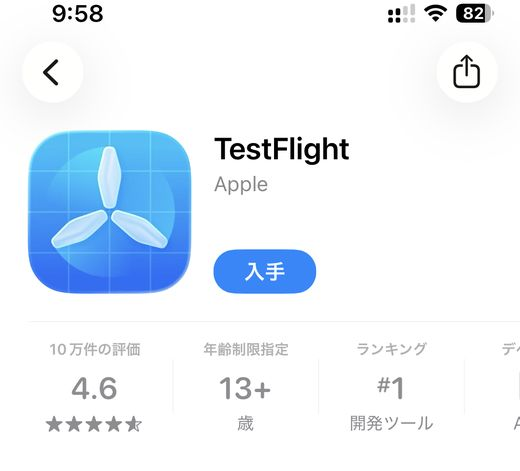
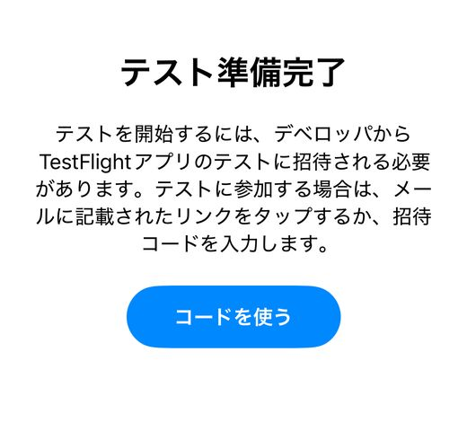
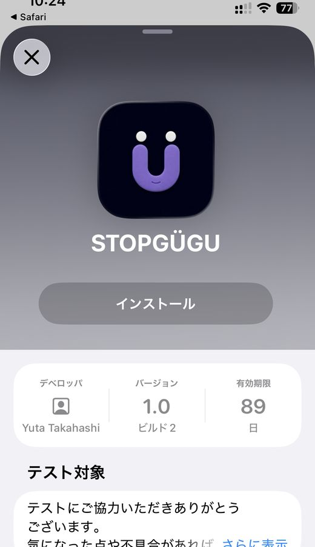
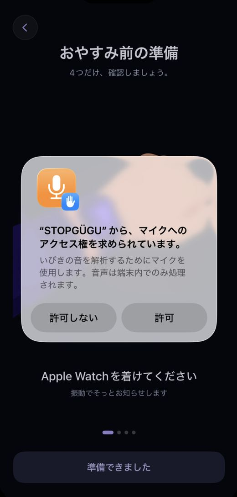
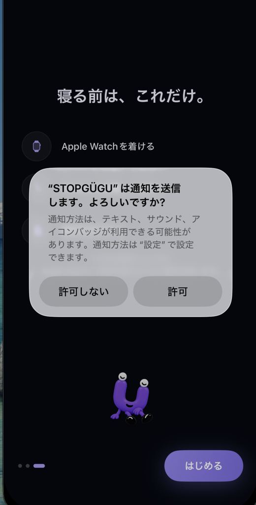
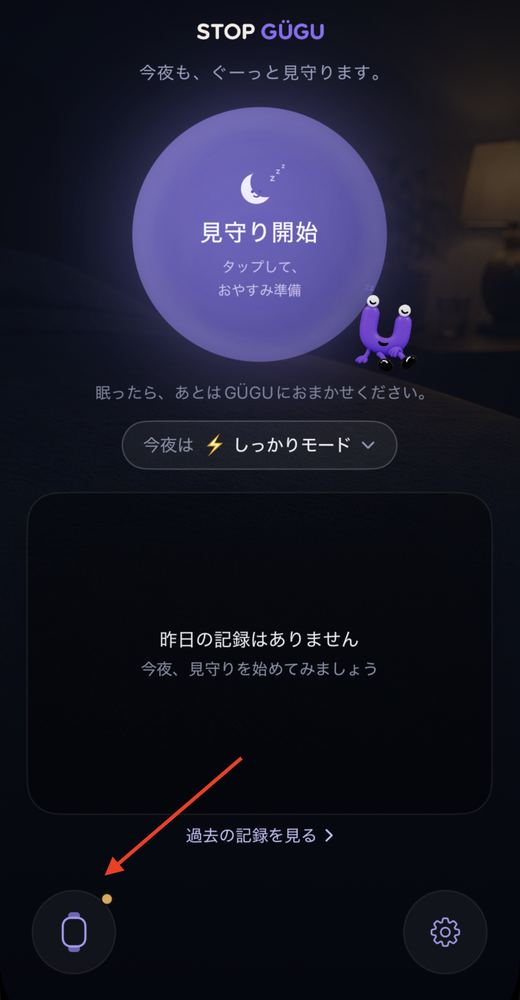
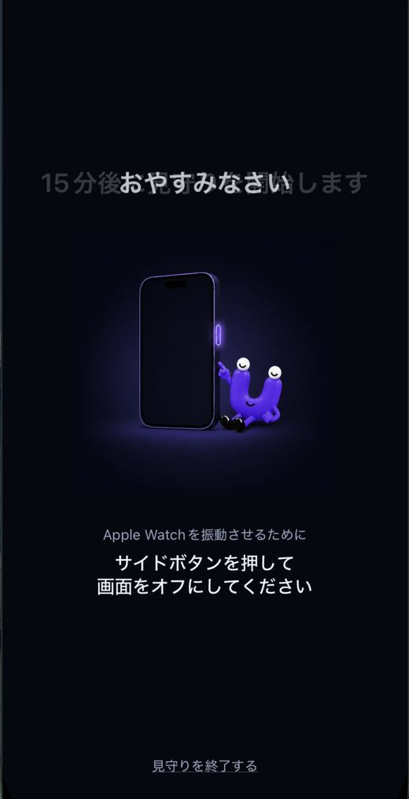
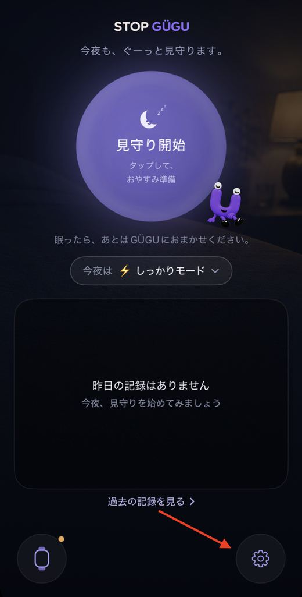
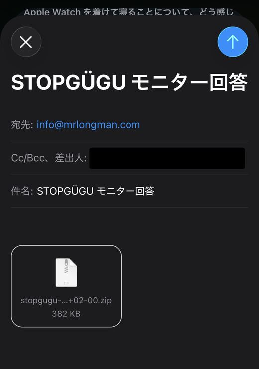

はじめの準備は分ほど。
あとは毎晩、Apple Watch を着けて眠るだけです。
上から順に進めれば終わります。
はまだ一般公開前のアプリのため、Apple 公式の「TestFlight」というアプリを経由してインストールします。無料です。

インストールが終わったら、いったん TestFlight を開いてください。最初に利用規約の同意画面が出ます。
「テスト準備完了」と表示されれば、この手順は完了です。ここではまだ何もインストールされていません。次に進んでください。

この画面が出ないとき 利用規約の同意が済んでいない可能性があります。TestFlight をもう一度開いて、案内に従って進めてください。
下のリンクを iPhone で 開いてください。TestFlight が自動で開き、 のページが表示されます。
インストール をタップすると、ホーム画面に のアイコンが追加されます。

パソコンで開いても進めません。 リンクは必ず iPhone で開いてください。メールや LINE で自分宛てに送っておくと開きやすいです。
ホーム画面の を開き、まん中の大きな をタップしてください。「おやすみ前の準備」が始まり、その途中で2つの確認が出ます。どちらも「許可」を選んでください。


ここが一番大事です。 どちらか一方でも「許可しない」を選ぶと、いびきを検知できず、Apple Watch も振動しません。テストのあいだ、なにも記録されない状態になってしまいます。
録音した音声は iPhone の中だけで処理され、外部に送信されることはありません。
誤って「許可しない」を押してしまった場合は、iPhone の 設定 → から、マイクと通知をオンに戻せます。
はじめての夜を迎える前に、実際に手首が振動するかを一度だけ確認しておきます。ここで振動しないまま眠ってしまうと、その晩のデータが取れません。

振動を感じられたら準備完了です。 今夜から始められます。
振動しない場合は、このページの下にある「うまくいかないとき」をご覧ください。

画面をつけたままにしないでください。 画面がついていると Apple Watch が振動しません。最後に必ずサイドボタンを押して、画面をオフにしてから眠ってください。
アプリを閉じても大丈夫です。 画面を消しても記録は続きます。開いたままにしておく必要はありません。
目が覚めたら を開いて、 をタップしてください。
そのあと質問が1問だけ表示されます。タップで選ぶだけなので、すぐ終わります。
正直に答えていただくことが、そのまま結果になります。「振動で起きてしまった」も大切なデータですので、遠慮なくお選びください。
答え忘れた日があっても、テストは続けられます。気づいた時点で次の日から再開してください。
募集要項で決められた晩数が終わったら、アンケートに答えて送信してください。これで完了です。


これで作業は完了です。ご協力ありがとうございました。
送信されるのは次の2つだけです。
録音した音声そのものは送信されません。音声は iPhone の中だけで処理され、判定が終わったら消えます。お名前や連絡先などの個人情報も含まれません。
アンケートの自由記述は、匿名でアプリの紹介文や記事に引用させていただく場合があります。引用を希望されない場合は、その旨をアンケートにご記入ください。
当てはまるものをタップすると開きます。
まず、iPhone の画面がオフになっているかを確認してください。画面がついていると振動しません。
それでも振動しない場合は、次の順に確認してください。
1. iPhone の 設定 → 通知 → で通知が許可されているか
2. iPhone の Watch アプリ → 通知 で がオフになっていないか
3. Apple Watch がシアターモードやおやすみモードになっていないか
4. Apple Watch の 設定 → サウンドと触覚 で触覚の強さが最小になっていないか
5. Apple Watch のバッテリーが切れていないか
それでも振動しない場合は、お手数ですがご連絡ください。
そのままで構いません。どこで止まったかも、こちらにとっては重要な情報です。翌晩はいつも通り進めてください。
毎晩同じように止まる場合は、ご連絡いただけると助かります。
検知の精度を確かめるのが、今回のテストの目的のひとつです。気づいた点はアンケートの自由記述にお書きください。うまくいかなかった例ほど参考になります。
募集要項に書かれた期間内であれば、連続していなくて構いません。翌日以降に再開してください。
気づいた時点で をタップしてください。その日の記録が長くなるだけで、翌晩には影響しません。
Wi-Fi に接続した状態でもう一度お試しください。それでも送れない場合は、送信せずにご連絡ください。別の方法をご案内します。
TestFlight アプリを開くと、 が一覧に残っています。そこから開き直せます。
削除していただいて構いません。TestFlight も不要であれば削除できます。記録は端末の中にしかないため、削除すると消えます。